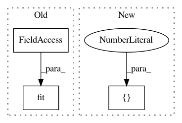

161a91e9a65de139b1b3e54ff680b53a74610a48,tests/test_classifier/test_rocauc.py,ROCAUCTests,test_predict_proba_rocauc,#ROCAUCTests#,333
Before Change
// Fit model and visualizer
visualizer = ROCAUC(model)
visualizer.fit(X, yb)
expected = np.asarray([
[0.493788, 0.506212],
[0.493375, 0.506625],
After Change
// First 10 expected arrays in the y_scores
first_ten_expected = np.asarray([
[0.595, 0.405],
[0.161, 0.839],
[0.990, 0.010],
[0.833, 0.167],
In pattern: SUPERPATTERN
Frequency: 3
Non-data size: 3
Instances
Project Name: DistrictDataLabs/yellowbrick
Commit Name: 161a91e9a65de139b1b3e54ff680b53a74610a48
Time: 2018-07-24
Author: rebeccabilbro@users.noreply.github.com
File Name: tests/test_classifier/test_rocauc.py
Class Name: ROCAUCTests
Method Name: test_predict_proba_rocauc
Project Name: rasbt/mlxtend
Commit Name: f0f4ba31aaec58f607df632cfbec5fd39802958f
Time: 2015-04-09
Author: se.raschka@me.com
File Name: mlxtend/evaluate/learning_curves.py
Class Name:
Method Name: plot_learning_curves
Project Name: philipperemy/keras-tcn
Commit Name: 8ff135bfe2df23037272b8cba6b26bd7f4cf0f45
Time: 2018-03-22
Author: premy@reactive.co.jp
File Name: mnist_pixel/main.py
Class Name:
Method Name: run_task